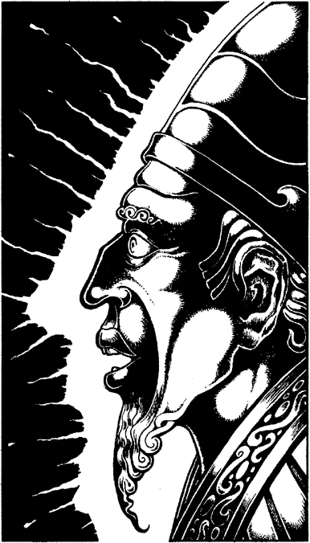

100
You enter a chamber where a tall bronze statue stands. You recognize its distinctive head-dress and robes immediately: it is a Zakhan, a ruler of the desert empire of Vassagonia. The statue looks most distressed: its arms are outstretched in a gesture of hopelessness, and the expression on its face is one of sorrow and despair. Beyond the statue, an oval-shaped door is set flush in the wall, but you discover that it is locked.

The mist grows brighter. Once more the skull appears and speaks, its voice as comforting as a raven’s croak:
‘Listen to the Zakhan,
Ponder what you hear;
Give the correct answer,
For fear he sheds a tear.’
The skull disappears into the misty ceiling, and you watch amazed as the dull bronze lips of the statue begin to move. A harsh voice echoes from deep within its hollow metal body:
‘My daughter has many sisters, as many sisters as she has brothers, but each of her brothers has twice as many sisters as brothers. So answer me this, wise warrior, how many sons and daughters do I have?’
Consider your answer carefully and, when you have decided, write down first the number of sons the Zakhan has and then, immediately next to it, the number of daughters. Now turn to the entry which bears the same number as your answer. 6
If you cannot answer the Zakhan’s riddle, turn to 270.
Footnotes
[6] The section corresponding to the correct answer will have a footnote confirming that it is indeed correct.